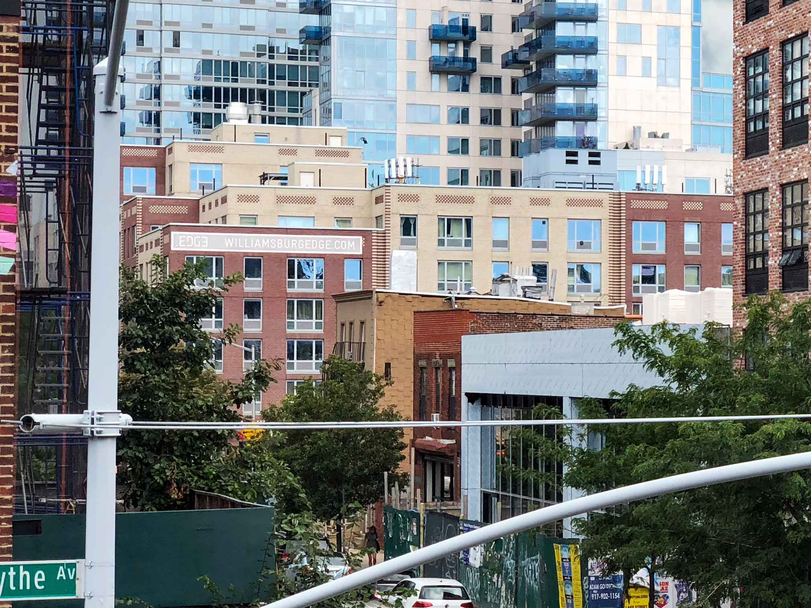
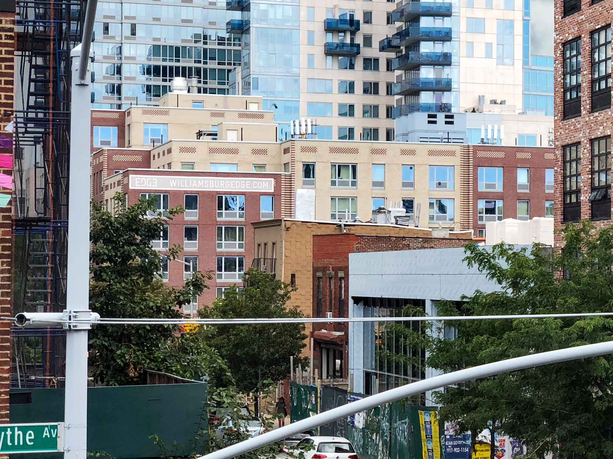
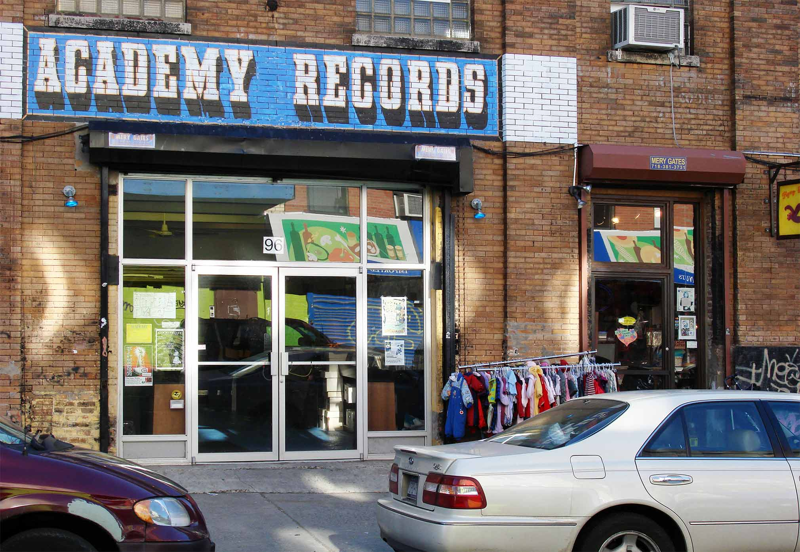

A Decade of Hyper-development in North Brooklyn
 

Desk View
The view from my desk in 2007 vs today. This one is the most dramatic. It's almost hard to find the throughline here. But I assure you this is lined up pretty well. It’s just that almost every visible thing has changed, including the lamp post.

Academy Records
At least Academy Records and Flying Squirrel are still going strong up in Greenpoint.